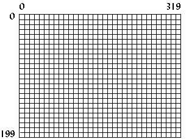
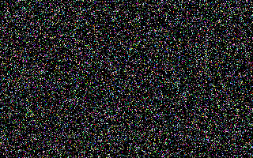
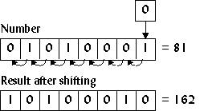

What is VGA?
VGA stands for Video Graphics Array, sometimes referred to as Video Graphics Adapter. It is a video card, which is an interface between a computer and its corresponding monitor. The VGA card is the most common video card — nearly every video card has VGA compatibility — and it is fairly easy to program. It offers many different video modes, from 2 color to 256 color, and resolutions from 320x200 to 640x480. This tutorial pays close attention to the VGA's only 256-color mode, known as mode 0x13.
Structure of mode 0x13
In mode 0x13, the screen dimensions are 320 pixels in width and 200 pixels in height. This is mapped 0 to 319 on the x axis and 0 to 199 on the y axis, with the origin (0,0) at the top-left corner (Figure 1). Since this is a 256-color mode, each pixel represents 8 bits (28=256) or one byte, so the memory needed is 320*200 or 64,000 bytes.
-

- Figure 1. Structure of Mode 0x13.
Setting the video mode
To set the video mode, call interrupt 0x10 (BIOS video
functions) with 0 (zero) in the AH register and the
desired mode number in the AL register. For mode
0x13, the code (Borland C) would be as follows:
union REGS regs; regs.h.ah = 0x00; /* function 00h = mode set */ regs.h.al = 0x13; /* 256-color */ int86(0x10,®s,®s); /* do it! */
To return to text mode after the program finishes, simply set the mode number to 3.
union REGS regs; regs.h.ah = 0x00; regs.h.al = 0x03; /* text mode is mode 3 */ int86(0x10,®s,®s);
Plotting a pixel
An easy way to plot a pixel is by using function 0x0C under
BIOS interrupt 0x10. For this function, set CX and DX
to the pixel x and y location. The color displayed
depends on the value in AL. See Table I for a list
of common colors.
union REGS regs; regs.h.ah = 0x0C; /* function 0Ch = pixel plot */ regs.h.al = color; regs.x.cx = x; /* x location, from 0..319 */ regs.x.dx = y; /* y location, from 0..199 */ int86(0x10,®s,®s);
This pixel-plotting method is easy, but it is also very slow. BIOS will do certain checks to make sure that the input is valid, and then it will test to see if the (x,y) coordinates are within the screen boundaries, and finally it will calculate the offset to video memory. A faster way to plot a pixel is to write directly to video memory.
Mode 0x13 memory
As mentioned before, the memory needed for mode 0x13 is 64,000 bytes. This memory is located at segment 0xA000 in the computer's memory. Simply writing to that area in memory will also write to the screen. The color displayed depends on the byte value written to memory.
| Value | Color |
|---|---|
| 0 | Black |
| 1 | Blue |
| 2 | Green |
| 3 | Cyan |
| 4 | Red |
| 5 | Magenta |
| 6 | Brown |
| 7 | Light Gray |
| 8 | Dark Gray |
| 9 | Light Blue |
| 10 | Light Green |
| 11 | Light Cyan |
| 12 | Light Red |
| 13 | Light Magenta |
| 14 | Yellow |
| 15 | White |
Table I. The first 16 VGA colors.
Since memory is linear (unlike the computer screen, which has both an x and a y dimension), the offset into computer memory must be calculated to plot a pixel. To do this the y value is multiplied by the width of the screen, or 320, and the x value is added to that. Thus to plot a pixel at location (256,8), first calculate 256+8*320=2816 or 0xB00, then write to segment 0xA000, offset 0xB00. The following program segment creates a pointer to address 0xA000:0000, computes the offset from two variables, and then writes to the calculated memory location.
Plotting a pixel quickly
typedef unsigned char byte; byte far *VGA = (byte far*)0xA0000000L; unsigned short offset; ... offset = 320*y + x; VGA[offset] = color;
The previous code has the following characteristics:
- The variable
offsetmust be anunsigned shortdata type (16 bits with a range from 0 to 65,535) because the size of memory needed for mode 0x13 is 64,000 bytes. Using anunsigned shortdata type helps insure that we won't accidently write to an area of memory that isn't part of the video memory, which might cause our program to crash. - If
ywere 5 andxwere 340, the pixel would be displayed at (20,6), since video memory in mode 0x13 is linear, and the width of the screen is only 320. The BIOS function would not display a pixel on the screen for (340,5) since it clips to the screen boundaries. - The pointer to the VGA memory segment must be
farwhen compiled in the smaller memory modules. If the memory module used is COMPACT, LARGE, or HUGE, then thefarkeyword can be removed. - In most DOS extenders, the 32-bit protected mode pointer
to video memory would be
0xA0000instead of the segment-offset pointer0xA0000000L.
Program: pixel.c
The following program demonstrates how much faster writing directly to video memory is. It plots 50,000 pixels using BIOS, then does the same by writing directly to video memory, and then displays the results.
- DJGPP 2.0
- View pixel.c
Download pixel.zip (Contains pixel.c, pixel.exe) - Borland C, Turbo C, etc.
- View pixel.c
Download pixel.zip (Contains pixel.c, pixel.exe)
Having trouble compiling or running the program? See the Troubleshooting page.
-

-
Figure 2.
Screenshot of
pixel.exe.
This program, along with all other programs in this tutorial,
ran on a 486dx 33Mhz with 8MB of memory, 128KB cache, and a
16-bit ISA SVGA card. The results from pixel.exe on
this computer were as follows:
Slow pixel plotting took 3.846154 seconds. Fast pixel plotting took 0.989011 seconds. Fast pixel plotting was 3.888889 times faster.
Shifting
A way to further speed up pixel plotting is to use shifting instead of multiplication when calculating the offset. Shifting a number to the left means to move all the bits in the number to the left, which produces the effect of multiplying by two (Figure 3).
-

- Figure 3. Shifting a number to the left.
If a number n was shifted to the left three times, the
result would be 23n or 8n. In C, this is
done by using the << operator:
a = 6<<3; /* same as 6*8 */
To multiply by 320, which is not a power of two, break the number down into powers of two: 256 and 64. For example,
320y = 256y + 64y,
so calculate the offset as follows:
offset = (y<<8) + (y<<6) + x;
The next section, which deals with basic drawing elements, uses this technique frequently.